En aquesta pràctica es mostrarà com obtenir, descarregar i instal·lar el paquet ofimàtic LibreOffice, així com activar-lo per a la seva utilització.
Descàrrega del paquet LibreOffice
La versió del paquet ofimàtic, al moment d'escriure aquests materials, correspon a la versió 2.1.0 en català. Podeu descarregar la versió més recent del programa de les següents adreces:
- Wiki de Softcatala, on trobareu les versions del programa corresponents als diferents sistemes operatius, Windows i GNU/Linux.
- Pàgina de Softcatalà, d'on podeu obtenir, dels diferents servidors de descàrrega, la versió més recent del programa en català per al sistema operatiu Windows.
En qualsevol cas, obtindreu el fitxer OOo_3.2.1_Win_x86_install-wJRE_ca, en format .exe, o la corresponent a Linux en format .tar.gz que us permetrà instal·lar el programa.
Instal·lació del LibreOffice 3.2.1 per a Windows
Localitzeu, al vostre ordinador, el fitxerOOo_3.2.1_Win_x86_install-wJRE_ca.exe i executeu-lo. En fer-ho, s'iniciarà l'assistent d'instal·lació que ens guiarà durant tot el procés.
- L'assistent us informa que crearà una carpeta on copiarà els fitxers per a la instal·lació. Premeu el botó Endavant per passar al següent pas.
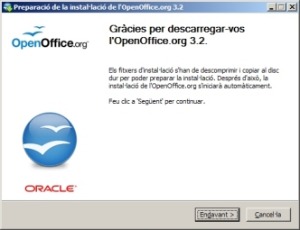 - L'assistent us informa de la carpeta on es desaran els fitxers necessaris per a la instal·lació. Es pot canviar la ubicació d'aquesta carpeta, que per defecte serà l'escriptori, amb el botó Navega. Deixeu sense canvis aquesta ubicació (us serà més fàcil eliminar-la un cop finalitzat el procés d'instal·lació) i premeu el botó Descomprimeix per accedir al següent pas de l'assistent.
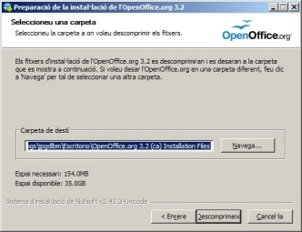 - Un cop descomprimits tots els fitxers en una carpeta a l'escriptori, l'assistent ja està preparat per procedir a la instal·lació del programa. Premeu el botó Següent per a accedir al pas següent.
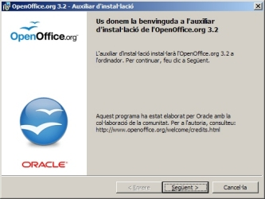 - Completeu les dades del formulari, nom i cognoms i organització, escolliu si la instal·lació serà per a l'usuari que ha obert sessió o per a tots els usuaris (és recomanable aquesta segona) i premeu el botó Següent per continuar.
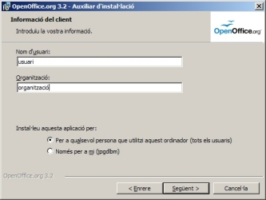 - Escolliu, en aquest punt, l'opció Completa i premeu el botó Següent.
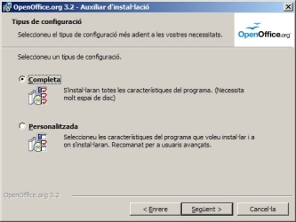 - Premeu el botó Següent per instal·lar el LibreOffice amb les característiques que haureu establert. El botó Enrera us permetrà tornar sobre els passos anteriors i modificar, si fos necessari, algunes de les característiques de la instal·lació.
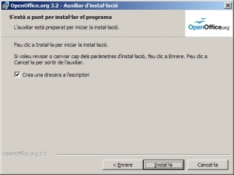 - Espereu mentre es completa la instal·lació del programa. La barra de progrés us indicarà l'estat de la instal·lació.
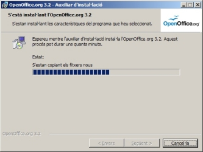 - Premeu sobre el botó Finalitza per donar per finalitzat el procés d'instal·lació.
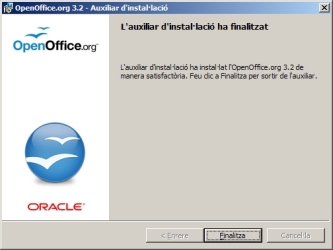 - Elimineu, del vostre escriptori, la carpeta LibreOffice 3.2 (ca) Installation Files.
Primera execució del LibreOffice
El procés d'activació del LibreOffice és comú per a tots els programes del paquet ofimàtic. Un cop fets tots els passos de l'assistent d'activació i registre, no caldrà tornar a fer-lo sigui quin sigui el programa que inicieu: Writer, Calc, Base…
- Demaneu Inicia | Tots els programes | LibreOffice 2.1 | LibreOffice Writer.
- Seguiu els passos de l'assistent per a la primera execució del programa.
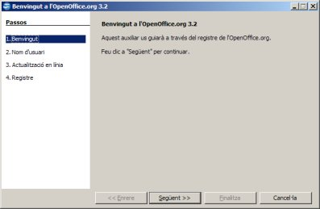
Premeu el botó Següent per accedir a la finestra següent.
- Ompliu el formulari de la finestra següent amb el vostre Nom, cognoms i inicials. Un cop fet, premeu el botó Següent.
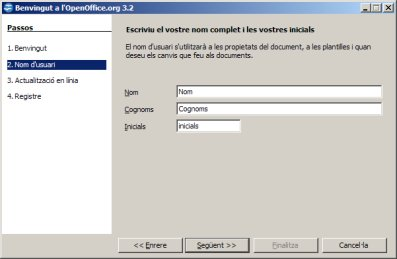
- Establiu si voldreu o no que el programa pugui actualitzar-se de forma automàtica. Un cop fet, premeu el botó Següent.
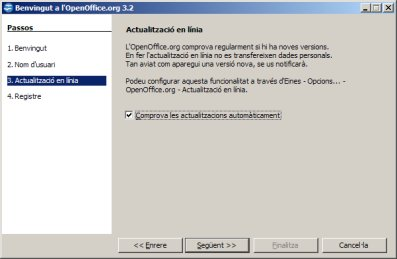 - No és necessari que us registreu. Activeu l'opció No vull registra-me per no allargar el procés d'activació i premeu el botó Finalitza.
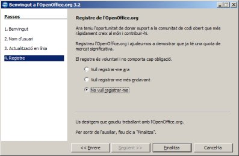 - En fer-ho, s'iniciarà el LibreOffice Writer
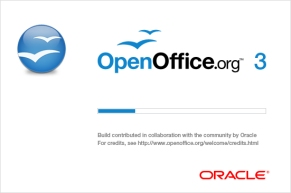 i, en finalitzar el procés de càrrega, us mostrarà la seva finestra de treball.
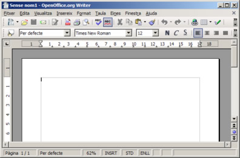 - Sortiu del LibreOffice Writer amb l'opció de menú Fitxer | Surt (o premeu Ctrl+Q).
Iniciar el Writer
En la fase d'instal·lació, s'haurà afegit una drecera, Inici ràpid del LibreOffice 3.2, al menú d'Inicialització de Windows; d'aquesta forma, en iniciar Windows, apareixerà una icona a la barra de tasques que permet accedir ràpidament a les aplicacions del LibreOffice. Només caldrà que premeu, amb el botó dret del ratolí, sobre la icona i escolliu l'aplicació que vulgueu iniciar, en el vostre cas Document de text, que posarà en marxa el LibreOffice Writer.
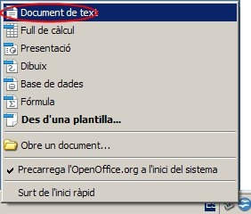
També podeu iniciar el LibreOffice Writer d'altres maneres:
- Demanant Inicia | Tots els programes | LibreOffice 3.2 | LibreOffice Writer.
- Fent doble clic a sobre de qualsevol document que estigui associat amb aquest programa
 . En aquest cas, el LibreOffice Writer s’executa i us presenta el document en pantalla.
. En aquest cas, el LibreOffice Writer s’executa i us presenta el document en pantalla.

|
|

|
|